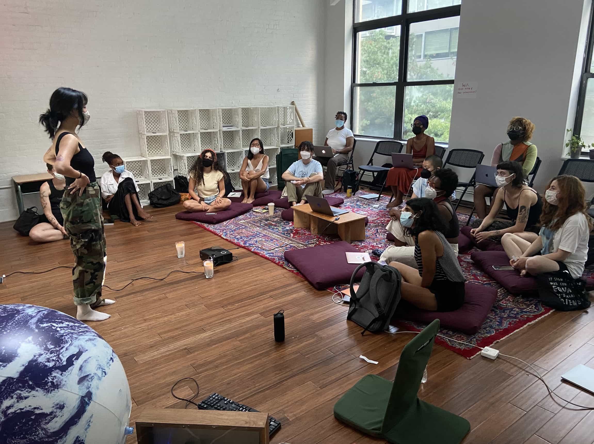
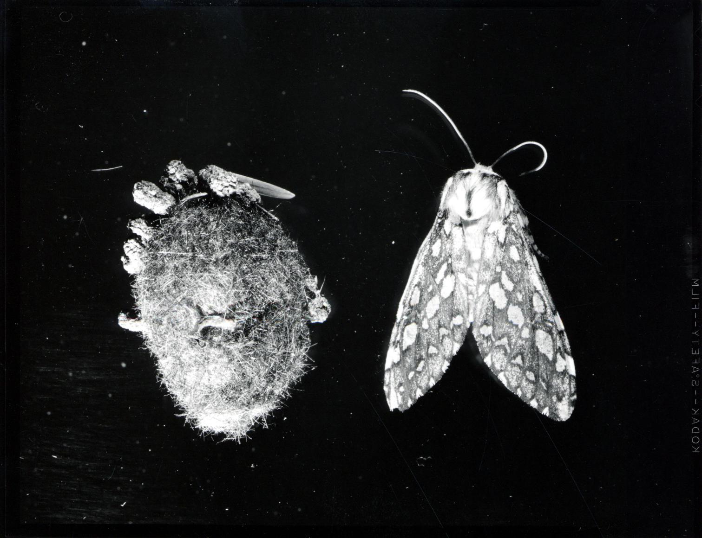
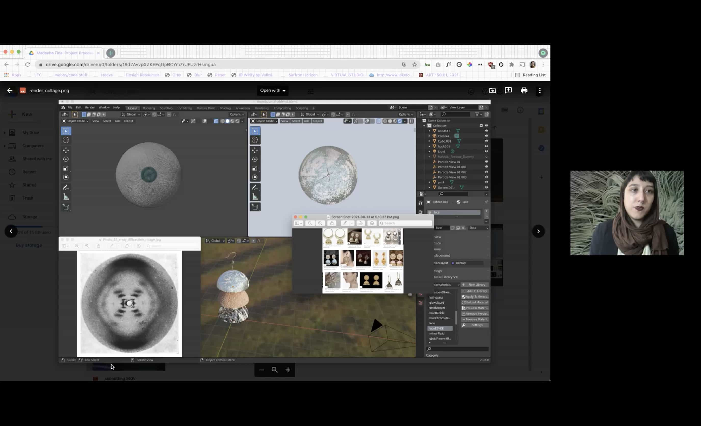
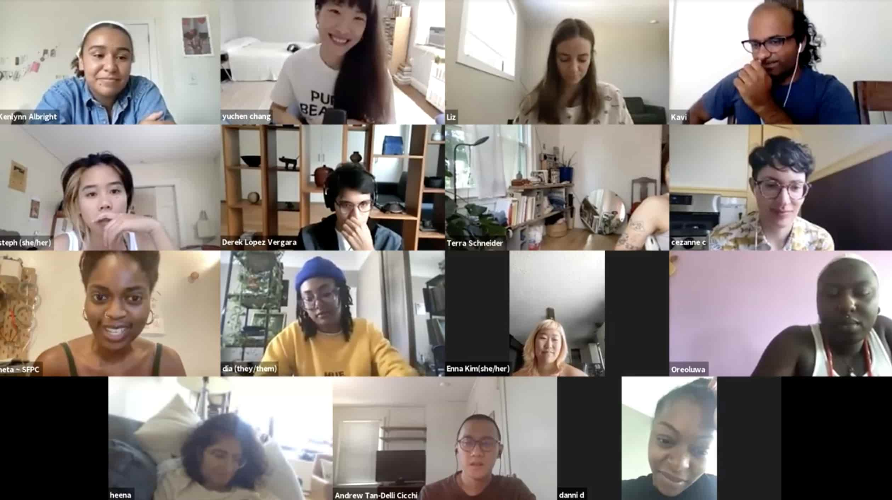
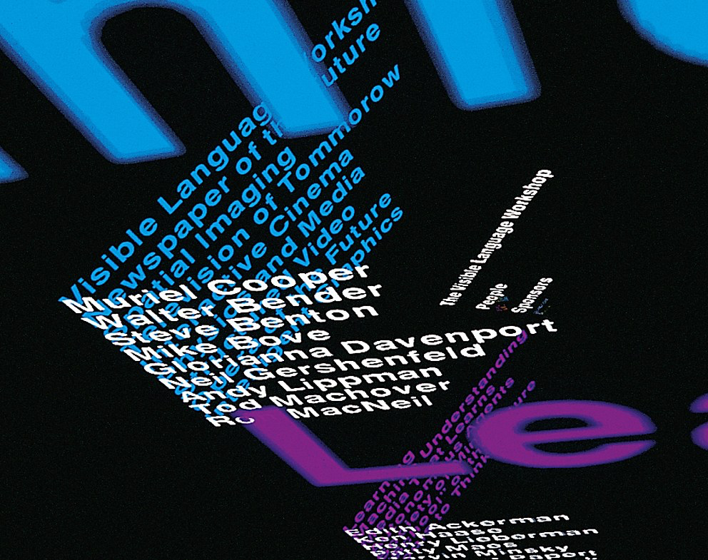

The School for Poetic Computation is an experimental artist-run school in New York supporting interdisciplinary study in art, code, hardware and critical theory. It is a place for unlearning and learning.
We begin this new season in full hearted gratitude for all of 119 of the participants that joined us in COCOON this summer.  Participants gather at Prime Produce for "Digital Love Languages" with Melanie Hoff and Olivia Mckayla Ross 13 teachers pushed the boundaries of what Poetic Computation can mean:  finding new personal and collective relationships to mathematics, reading through paper craft and book making, critical approaches to DNA analysis, tracing the boundaries of augmented reality, and asking what role love can play in learning and coding.  Participants share final projects during "AncestryandMe" with American Artist and Zainab Aliyu  Participants gather on Zoom for "Reading, writing & compiling" with Neta Bomani, Gabrielle Octavia Rucker, Kameelah Janan Rasheed, Jie Qi, Natalie Freed, Chang Yuchen
This fall is a pivot—the present is a portal. Our two classes, "Reading into the Past / Writing into the Future" taught by Ashley Jane Lewis and "Recreating the Past" taught by Zach Lieberman, are opportunities to develop stories of many histories and many futures through presence in shared creative practice.
Stay tuned for more updates!
Instagram
The School for Poetic Computation is co-organized by Zainab Aliyu, Todd Anderson, American Artist, Neta Bomani, Melanie Hoff, Galen Macdonald and Celine Katzman Wong, with the support of Nabil Hassein and Emma Rae Norton.
Read about our organization's recent history here.
This website was designed by Zainab Aliyu, and was developed with Todd Anderson.
Our website is fully keyboard accessibile for non-mouse users, and is typeset in Alte Haas Grotesk.